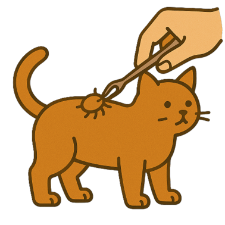

Unser Angebot an Pflegeservice für Ihr Haustier:
Scheren
Schneiden
Bürsten
Unterwolle entfernen
Baden und Föhnen
Krallen- und Pfotenpflege
Augenpflege
Ohrenpflege
Sowie:

Analdrusencheck
- 
Zecken Entfernung
Trockenbaden von
Katzen und bürstenEntkrallen
Knoten im Haar entwirren
Floh-Entfernung
Anpassungsbehandlung für junge und neue Hunden
| Das Arbeiten gestaltet sich schwierig, wenn der Hund nass ankommt, und es schränkt auch die Wahl der Frisur ein. Die gesamte Behandlung wird länger dauern und Ihr Hund wird darüber keine Freude haben. |